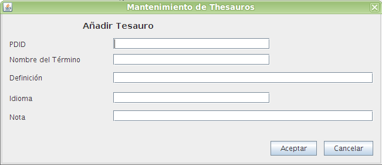

Añadir Tesauro OpenProdoc
Este formulario permite crear un tesauro introduciendo todos sus datos.
Debe introducirse la información siguiente:
- PDID: Identificador numérico del tesauro. Puede utilizarse números enteros entre 1 y 999999. Se utilizará como referencia al definir metadatos que se validen contra los valores de ese tesauro
- Nombre: Nombre del tesauro (hasta 128 caracteres).
- Definición: Texto descriptivo del tesauro (hasta 254 caracteres)
- Idioma: 2 caracteres ISO del idioma (ES, EN, PT, etc)
- Nota: Nota del tesauro (SCN) (hasta 254 caracteres).

En caso de producirse un error, la operación se cancela y se comunicará al usuario el motivo del error.
Índice Ayuda Tesauros